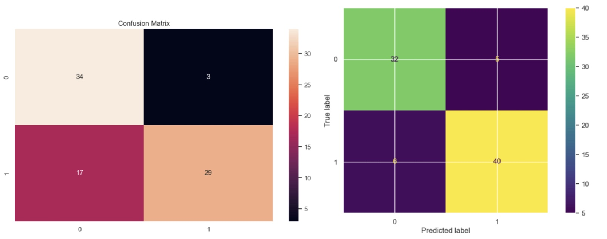
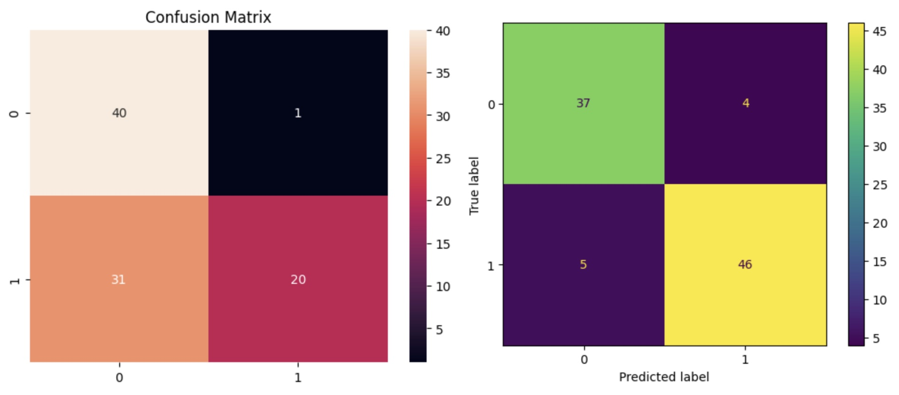

Neural Network
for Medical Data
Extracts from the report
The study of MLP and SVM models demonstrated that SVM model is more suitable for the prediction of heart failures.
Based on the hyperparameters and the performance of the model, the initial hypothesis was correct. The secondary metric result was also good in SVM model, which means it can be tried in the wild.
Validation results from MLP (left) Validation results from SVM (right)
I learned how to use support vector machines and their kernel hyperparameter for nonlinear classification. It is a powerful tool for classification, which achieved high accuracy when tested on the unseen data. It would be beneficial for me to learn more about hyperparameters, which I did not use in this paper.
Test results from MLP (left) Test results from SVM (right)
I think it would be interesting to investigate MLP with more hidden layers and then compare it to SVM with other hyperparameters, which I did not use. It would be useful for the further studies on the heart failure predictions, as it is the problem we need to address and solve as we move into the future with technologies.